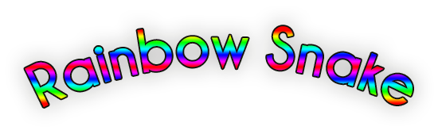

ACCUEIL
LE JEU
CODE SOURCE
Rainbow Snake
/ Code Source
int o = 0; int angle = 0; int taillesnake = 5; int temps = 0; boolean finjeu = false; boolean refaire = true; int[] teteY = new int[2500]; int[] teteX = new int[2500]; int pommeX = (round(random(47))+1)*8; int pommeY = (round(random(47))+1)*8; int arcenciel1 = 0 ; int arcenciel2 = 0 ; int arcenciel3 = 0 ; void setup() { restart(); size(400,400); textAlign(CENTER); } void draw() { if (finjeu) { /*la variable finjeu étant tout le temps fausse à cette étape le programme passe directement au else*/ } else { /*la variable temps permet de créer une frame toute les 5 frames pour ralentir le jeu*/ temps+=1; //dessin des murs et de la pomme fill(255,0,0); stroke(0); rect(pommeX,pommeY,8,8); fill(0); stroke(0); rect(0,0,width,8); rect(0,height-8,width,8); rect(0,0,8,height); rect(width-8,0,8,height); if ((temps % 5)==0) { //appel des fonctions travel(); display(); checkdead(); } } } //contrôle de la direction du snake void keyPressed() { if (key == CODED) { //détection de la touche pressée //vérification de la direction précédente du serpent //vérification de la position de la position de la case 2 du serpent par sécurité //stockage de l'angle dans la variable "angle" if (keyCode == UP && angle!=270 && (teteY[1]-8)!=teteY[2]) { angle=90; } if (keyCode == DOWN && angle!=90 && (teteY[1]+8)!=teteY[2]) { angle=270; }if (keyCode == LEFT && angle!=0 && (teteX[1]-8)!=teteX[2]) { angle=180; }if (keyCode == RIGHT && angle!=180 && (teteX[1]+8)!=teteX[2]) { angle=0; } if (keyCode == SHIFT) { //relancer le jeu en appuyant sur shift restart(); } } } void travel() { for (int i=taillesnake; i>0; i--) { if (i!=1) { //décale les coordonnées d'une case au fur et a mesure que le serpent avance teteX[i]=teteX[i-1]; teteY[i]=teteY[i-1]; } else { /*fait tourner la tête du serpent en fonction de la valeur de la variable "angle" définie plus haut*/ switch(angle) { case 0: teteX[1]+=8; break; case 90: teteY[1]-=8; break; case 180: teteX[1]-=8; break; case 270: teteY[1]+=8; break; } } } } void display() { //la tête du serpent se superpose-t-elle avec la pomme ? if (teteX[1]==pommeX && teteY[1]==pommeY) { //augmentation de la taille du serpent de 2 cases taillesnake+=2; //le compteur de pomme mangée prend la valeur o+1 o+=1; refaire=true; while(refaire){ //spawn de la pomme pommeX = (round(random(47))+1)*8; pommeY = (round(random(47))+1)*8; for(int i=1; i<taillesnake; i++){ //la pomme est-elle apparue sur le serpent ? if (pommeX==teteX[i] && pommeY==teteY[i]){ //si oui, la refaire apparaître plus loin refaire=true; } else{ refaire=false; i=1000; } } } } //dessiner la nouvelle tête du serpent stroke(255, 255, 255); fill(sinecolor(100),sinecolor(50),sinecolor(0.999)); rect(teteX[1], teteY[1], 8,8); //effacement de la queue du serpent fill(255); rect(teteX[taillesnake], teteY[taillesnake], 8, 8); } void checkdead(){ for(int i=2; i<=taillesnake;i++){ //le serpent se mange-t-il la queue ? if (teteX[1]==teteX[i] && teteY[1]==teteY[i]){ fill(255); rect(125,125,160,100); fill(0); //si oui game over text("GAME OVER",190,150); text("Nombre de pommes mangées : "+str(o),200,180); text("Longueur du serpent "+str(taillesnake-1),200,200); text("Cliquez sur maj pour relancer.",200,220); finjeu=true; } //la tête du serpent entre-elle en collision avec un mur ? if(teteX[1]>=(width-8) || teteY[1]>=(height-8) || teteX[1]<=0 || teteY[1]<=0){ fill(255); rect(125,125,160,100); fill(0); //si oui game over text("GAME OVER",190,150); text("Nombre de pommes mangées : "+str(o),200,180); text("Longueur du serpent "+str(taillesnake-1),200,200); text("Cliquez sur maj pour relancer.",200,220); finjeu=true; } } } void restart() { //réinitialisation de toutes les variables en cas de restart background(255); teteX[1]=200; teteY[1]=200; for(int i=2;i<1000;i++) { teteX[i]=0; teteY[i]=0; } finjeu=false; pommeX=(round(random(47))+1)*8; pommeY=(round(random(47))+1)*8; taillesnake=5; temps=0; angle=0; refaire=true; o = 0; } //changement de couleur du serpent en utilisant la variable sinecolor float sinecolor(float pourcent) { //utilisation de la fonction sinus pour obtenir une variation alternée de la valeur float slime=sin(radians(((temps+100*pourcent))))*255; return slime; }
Télécharger Processing
Site codé par Emilien TAILLET et Sylvain VETTER
Consulter les mentions légales